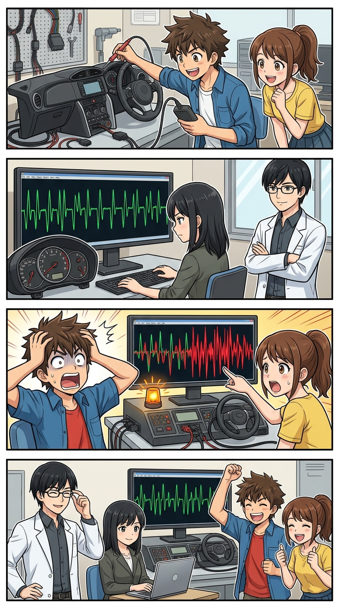
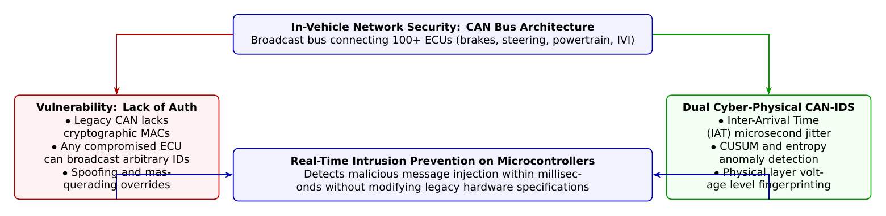

🎨 4コマ漫画挿絵（文字なし）
AI高解像度生成
▲ 【挿絵】青葉台高校 情報科学部＆帝都科学大学サイバーディフェンス・ラボでの実践シーン
💬 4コマ漫画キャラクターセリフ (Story Dialogue Script)
日・英バイリンガル (JA / EN)[葵]「もし悪意のあるハッカーが偽装パケットを送り込んだら、勝手に急ブレーキがかかっちゃうの！？」
[Aoi] "If a hacker injects spoofed frames into the harness, could they violently trigger phantom emergency braking!?"
[悠真]「だからこそ、攻撃者は正当なエンジン制御ECUになりすまして偽命令を割り込ませるんだ」
[Yuma] "That allows attackers to impersonate authentic powertrain ECUs and inject unauthorized overrides!"
[結衣]「さらにトランシーバーの微小な物理電圧特性（物理層指紋）を照合すれば、どのポートからの不正注入かも特定可能です！」
[Yui] "By fingerprinting the transceivers' analog voltage signatures, we even pinpoint the rogue injection port!"
[全員]「物理と情報の二重防御で、自動運転とモビリティの未来を守り抜こう！」
[All] "With dual cyber-physical defenses, we safeguard the future of autonomous mobility!"
📖 小説本文
冬の気配が深まる夕暮れの青葉台高校・情報科学部室。中央の大型作業台には、黒と白のツイストペア線が張り巡らされた巨大な車載ネットワークの実験ベンチが鎮座していた。
メーターパネルの速度計とタコメーターが並び、その横にはCAN（Controller Area Network）バスの信号を直接読み取るオシロスコープとCANアナライザーが規則的なビープ音を刻んでいる。
「……蓮くん、これって本物の車から取り出した配線なの？」
橘葵が興味津々で身を乗り出した。ツイストペア線に接続された小型の金属ボックス群――ECU（Electronic Control Unit: 電子制御ユニット）が、カチカチとリレーの作動音を響かせている。
「はい、葵先輩」神崎蓮がオシロスコープのプローブを端子に当てながら答えた。「最近のコネクテッドカーや自動運転車には、1台あたり100個以上のECUが搭載されていて、エンジン、ブレーキ、ステアリング、エアバッグから車載インフォテインメント（IVI）までが、すべてこの『CANバス』という共有ネットワーク線で繋がっているんです」
「えっ、全部同じ電線で繋がってるの？」葵が目を見張る。「じゃあ、もしハッカーが車載Wi-FiやOBD-IIポートから侵入したら、ブレーキのECUにも命令を送れちゃうの？」
「まさにそれが、現代の自動車セキュリティにおける最大の脅威なんだよ」
ドアを開けて入ってきた大学1年生の城崎悠真が、温かいお茶のペットボトルを部員たちに手渡しながら頷いた。 「1980年代にボッシュ社が開発したCANプロトコルは、堅牢性とリアルタイム性を最優先に設計されたため、**送信元の認証（Authentication）や暗号化（Encryption）の仕組みがプロトコル標準に存在しない**んだ。つまり、バスに接続されたすべてのECUが同じブロードキャスト通信を受信し、誰でも任意のIDを名乗ってフレームを送信できてしまう」
白石結衣がノートPCの画面にCANフレームの構造図を投影した。 「メッセージには『ID（識別子）』『データ長（DLC）』『データフィールド（最大8バイト）』しかありません。『誰が送ったか』を証明するデジタル署名もメッセージ認証コード（MAC）も付いていないのです。マイコンの計算リソースやCANの通信帯域（最大1Mbps）の制約から、すべての通信に重厚な公開鍵暗号を施すのは極めて困難です」
「じゃあ、悪いハッカーが『ブレーキを踏め！』とか『アクセル全開！』っていうパケットを勝手に流したら、車は騙されちゃうの？」葵が息を呑む。
「そこで登場するのが、横浜国立大学SPIRALの研究チーム（吉岡克成教授、佐々木貴之准教授ら）も追究している**『車載CAN侵入検知システム（CAN-IDS）』**なんだ」悠真がホワイトボードに数式とグラフを描き始めた。
---
📊 セキュリティ構造図解 (TikZ LuaLaTeX生成)
国家安全基準・工学図解
▲ 【技術構造図】IPAデジタルスキル標準・国際規格に準拠した仕組みのモデル化